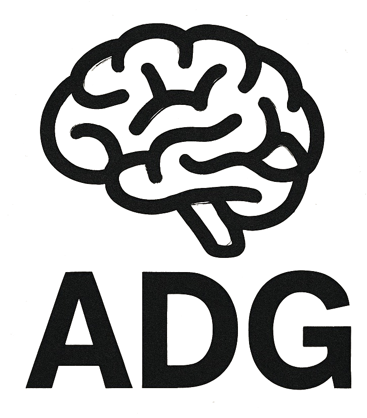

Psichiatria dell’adulto
Mi occupo della valutazione, del trattamento e della presa in carico delle principali condizioni psichiatriche dell’età adulta.
DOTT. ANTONIO DI GIOVANNI
Psichiatria dell’adulto · Salute mentale territoriale
Psicofarmacologia · Percorsi specialistici
Avezzano · L'Aquila

PROFILO
Sono medico chirurgo, specialista in Psichiatria e dirigente medico presso il Centro di Salute Mentale di Avezzano – ASL 1 Abruzzo.
La mia attività clinica riguarda la psichiatria dell’adulto e la salute mentale territoriale: dalla valutazione diagnostica al trattamento e alla presa in carico delle principali condizioni psichiatriche, comprese le condizioni di doppia diagnosi, caratterizzate dalla comorbidità tra disturbi psichiatrici e disturbi da uso di sostanze, attraverso una valutazione integrata e il raccordo con i servizi coinvolti nella presa in carico.
Tra i miei principali ambiti di interesse clinico rientrano la psicofarmacologia, i disturbi dell’umore e, in particolare, la depressione resistente al trattamento e le strategie terapeutiche innovative.
Presso il CSM di Avezzano mi occupo della depressione resistente al trattamento e del trattamento con esketamina. Seguo direttamente le sedute di somministrazione nell’ambito di un percorso multidisciplinare.

ATTIVITÀ E INTERESSI
Mi occupo della valutazione, del trattamento e della presa in carico delle principali condizioni psichiatriche dell’età adulta.
La mia attività si svolge nel contesto della salute mentale di comunità, con attenzione alla continuità assistenziale e all’integrazione tra interventi medici, psicologici, infermieristici, riabilitativi e sociali.
Particolare attenzione all’appropriatezza prescrittiva, all’efficacia, alla tollerabilità e alla gestione longitudinale dei trattamenti psicofarmacologici.
Valutazione e trattamento delle condizioni di doppia diagnosi, in cui coesistono un disturbo psichiatrico e un disturbo da uso di sostanze, con attenzione all’inquadramento clinico integrato, alle interazioni tra le due condizioni e al raccordo con i servizi coinvolti nella presa in carico.
Interesse clinico per la depressione resistente al trattamento, la rivalutazione diagnostica e terapeutica e le strategie farmacologiche specialistiche.
Presso il CSM di Avezzano mi occupo della depressione resistente al trattamento e del trattamento con esketamina. Seguo direttamente le sedute di somministrazione nell’ambito di un percorso multidisciplinare.
PERCORSO PROFESSIONALE
2025–oggiDirigente Medico Psichiatra · Centro di Salute Mentale di Avezzano, ASL 1 Abruzzo
2025Specializzazione in Psichiatria · Università degli Studi dell'Aquila · 50/50 e lode
2026Relatore · “Depressione in comorbidità: un approccio multidisciplinare tra psiche, cervello e invecchiamento”
2025Relatore · “La Depressione in ambulatorio: Riconoscere Gestire Inviare”
2024Relatore ECM ASL 1 Abruzzo · “Affrontare l'Adolescenza: difficoltà evolutive e percorsi di salute”
2024Formazione EMDR · Livello 1
2020Laurea Magistrale in Medicina e Chirurgia · Università degli Studi dell'Aquila
DOVE LAVORO
Centro di Salute Mentale di Avezzano
ASL 1 Abruzzo – Avezzano Sulmona L'Aquila.
Attività svolta presso le sedi autorizzate della ASL a L'Aquila e Avezzano. Per modalità di accesso e prenotazione si rimanda ai canali ufficiali dell'Azienda sanitaria.
I contenuti di questo sito hanno finalità informative e divulgative, sono pubblicati a titolo personale e non costituiscono comunicazioni ufficiali dell'Azienda sanitaria presso cui il professionista presta servizio. Le informazioni non sostituiscono una valutazione medica individuale.